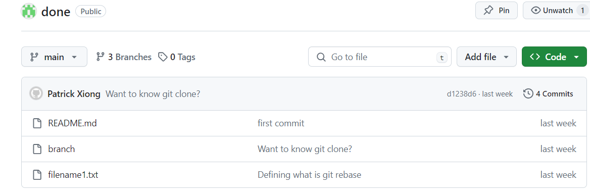
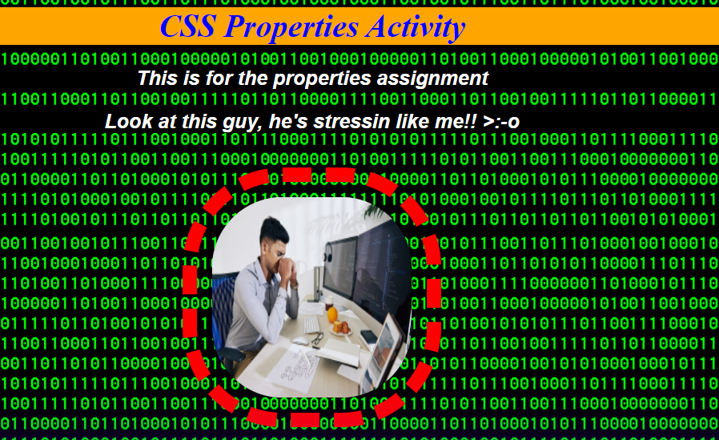
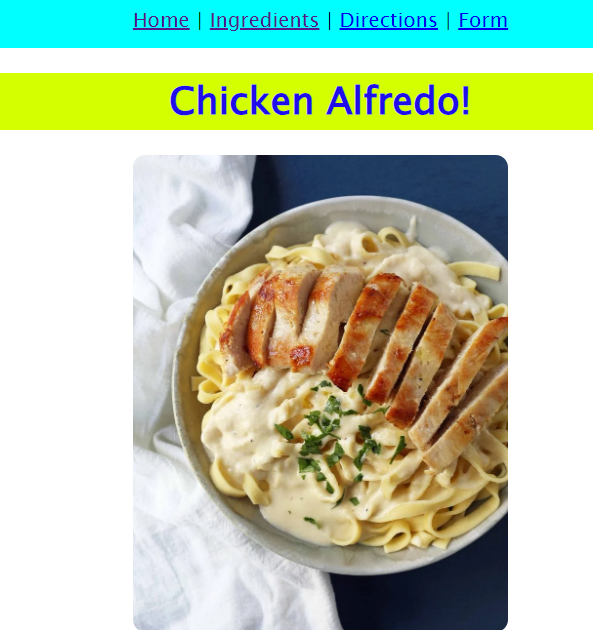

This project consisted of me and another teammate named Justus.
Our objective was to establish individual repositories, granting editorial access to our collaborators. Additionally, we created and merged our own branches, wherein we generated text files via the Git terminal and populated them with Git definitions.
Using css properties allows us to decorate and organize our html pages in groups instead of directly within the html file. This can also be done by inline or external CSS.
Inline CSS refers to editing the properties inside the html file, while external CSS edits them as a group in a CSS file, most commonly referred to as styles.css.
This is my favorite project thus far. By ourselves, we were to create webpages about our favorite recipe. This included a home, directions, ingredients, and form page.
I chose chicken alfredo as my favorite recipe. The process was slow and insightful because of the unexplored territory that I was in. I was able to learn a lot about html and css during this project. I enjoyed the css page the most because it allowed the webpages to look appealing and easy to navigate.
